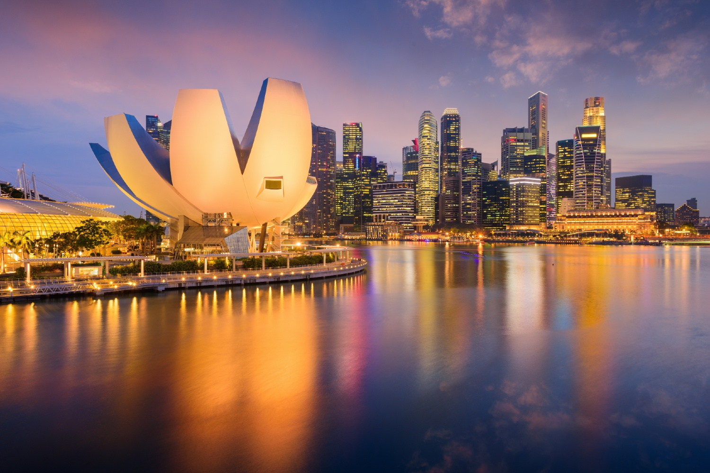

ArtScience Museum Singapore

This visually stunning interactive museum uses art to explore science and how we relate to it. Large immersive installations at the ArtScience Museum Singapore invite visitors to examine their relationship to the physical world around them.
The permanent exhibition Future World showcases how the slightest human interaction with the planet can change the environment. Large projections of natural environments respond to the movements of visitors, illustrating the effect of humans on their surroundings.
The iconic building that houses the museum is shaped like a lotus and is one of the most famous buildings in Singapore. As one of the museum’s goals is to make people aware of their impact on the natural environment, the building’s architecture responds to its natural surroundings too. The roof of the museum channels rainwater though the atrium of the building into a reflecting pool and the water is then recycled for use in the building.